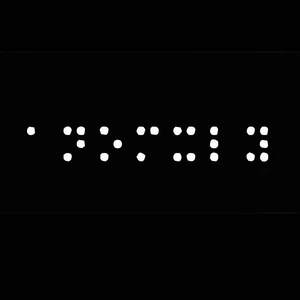

Trade Mark Journal No.2025/045 7 November 2025
UK00004283952 27 October 2025 (25)

- Class 25
- Clothes; Clothing; Swaddling clothes; Baby clothes; Beach clothes; Nappy pants [clothing]; Denims [clothing]; Jackets [clothing]; Work clothes; Shorts [clothing]; Clothes for sports; Aprons [clothing]; Drawers [clothing]; Drawers as clothing; Jackets (Stuff -) [clothing]; Stuff jackets [clothing]; Clothes for sport; Linen clothing; Headbands [clothing]; Headbands for clothing; Kerchiefs [clothing]; Bottoms [clothing]; Gloves [clothing]; Gloves as clothing; Capes (clothing); Furs [clothing]; Maternity clothing; Trunks being clothing; Babies' pants [clothing]; Jerseys [clothing]; Clothing layettes; Layettes [clothing]; Clothing for leisure wear; Hoods [clothing]; Oilskins [clothing]; Ready-to-wear clothing; Woolen clothing; Gabardines [clothing]; Bodies [clothing]; Clothing for babies; Garments for protecting clothing; Tops [clothing]; Belts [clothing]; Gussets for underwear [parts of clothing]; Belts for clothing; Playsuits [clothing]; Collars [clothing]; Pockets for clothing; Veils [clothing]; Knitwear [clothing]; Paper hats for use as clothing items; Corsets [clothing, foundation garments]; Silk clothing; Mitts [clothing]; Fabric belts [clothing]; Paper hats [clothing]; Hats (Paper -) [clothing]; Beach clothing; Belts (Money -) [clothing]; Money belts [clothing]; Braces for clothing; Chaps (clothing); Gussets for bathing suits [parts of clothing]; Ready-made clothing; Embroidered clothing; Casual clothing; Visors [clothing]; Knitted clothing; Hoodies; Hooded sweatshirts; Turtleneck shirts; Sweatshirts; Sweatpants; Hooded sweat shirts; Short-sleeved T-shirts; Fleece shorts; Hooded pullovers; Turtleneck pullovers; Turtleneck sweaters; Long-sleeved shirts; Mock turtleneck shirts; V-neck sweaters; Beanie hats; Short-sleeved shirts; Knit shirts; Short-sleeve shirts; Fleece pullovers; Fleece jackets; Corduroy shirts; Camouflage shirts; T-shirts; Fleece vests; Sleeveless pullovers; Sleeveless jackets; Leggings [trousers]; Mock turtleneck sweaters; Knit jackets; Camouflage pants; Beanies; Sleeveless jerseys; Bib shorts; Sleeved jackets; Sweatshorts; Dress shirts; Corduroy pants; Denim pants; Bib tights; Collared shirts; Shirts; Men's dress socks; Button-front aloha shirts; Polar fleece jackets; Open-necked shirts; Quilted jackets [clothing]; Dress pants; Moisture-wicking sports pants; Denim jackets; Shirt fronts; Hooded bathrobes; Weatherproof pants; Boy shorts [underwear]; Moisture-wicking sports shirts; Men's and women's jackets, coats, trousers, vests; Camouflage jackets; Casual shirts; Sweat shirts; Pants; Trousers shorts; Turtleneck tops; Jeans; Snowboard trousers; Bib overalls for hunting; Fingerless gloves as clothing; Hooded tops; Vest tops; Blue jeans; Jogging pants; Romper suits; Woven shirts; Denim jeans; Corduroy trousers; Shirt yokes; Yokes (Shirt -); Fleece tops; Sweaters; Chino pants; Printed t-shirts; Camouflage vests; Handwarmers [clothing]; Gloves for apparel; Windproof clothing; Tracksuit tops; Knitted underwear; Shirts for suits; Camouflage gloves; Cashmere clothing; Snowboard jackets; Pajamas; Polo sweaters; Gym shorts; Long sleeve pullovers; Sweat pants; Yoga shirts; Jacket liners; Blouson jackets; Capri pants; Plush clothing; Crew neck sweaters; Polo shirts; Sleep shirts; Men's underwear; Men's clothing; Leather pants; Sports shirts with short sleeves; Sport shirts; Windproof jackets; Padded shirts for athletic use; Waterproof pants; Fur jackets; Shorts; Snow pants; Overshirts; Sweat shorts; Night shirts; Pullovers; Pique shirts; Maternity leggings; Suede jackets; Tee-shirts; Baby pants; Sheepskin jackets.
Jaden Casimir Perry